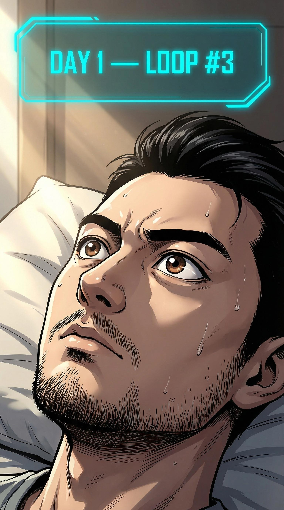
「第三次了。这次我不跟着剧本走。」
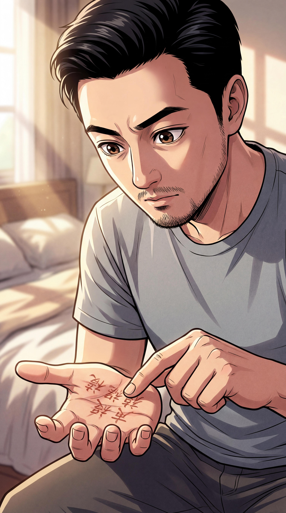
「物理记录不保留。但我的手掌是我的。」
💡 虽然每次循环手掌上的字也会消失，但至少...写的过程中可以帮助记忆。创业者的OKR精神。
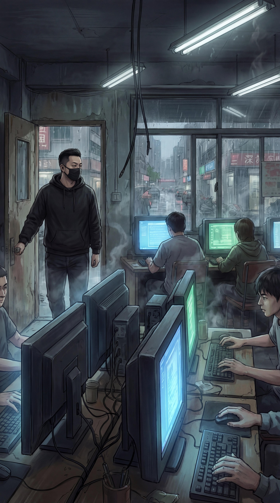
八点半。我没去公司。
我出现在了一家网吧里。
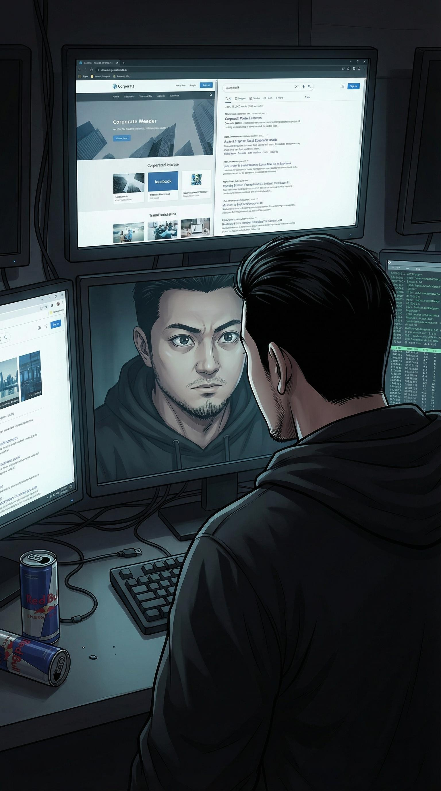
「如果林薇提前拿到了启元的白皮书，要么是她有内线，要么...她就是内线。我需要证据。」
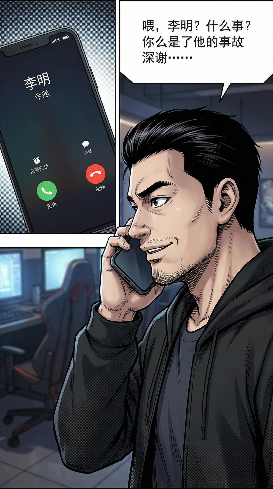
手机震动——李明来电。
"江总？你在哪？今天全员会..."
"李明，今天你主持。告诉大家我食物中毒了。"
💡 李明："...啊？你昨天不是吃的老干妈拌面吗？"
我："对，就赖老干妈。"
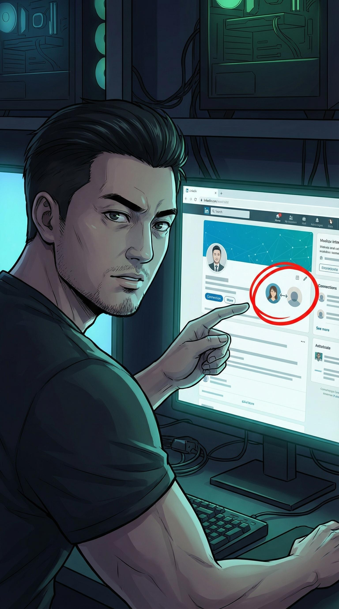
在网吧搜索启元科技员工信息——发现一个人和林薇毕业于同一学校同一届。
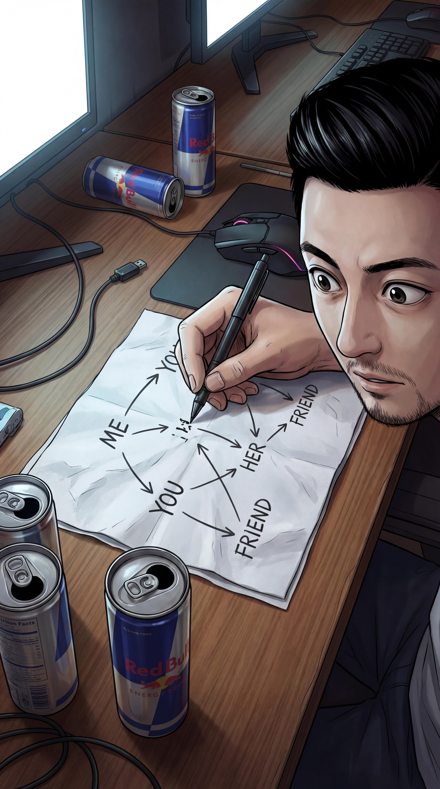
我在纸巾上画出关系图。
林薇 → 赵琳 → 启元科技商务总监
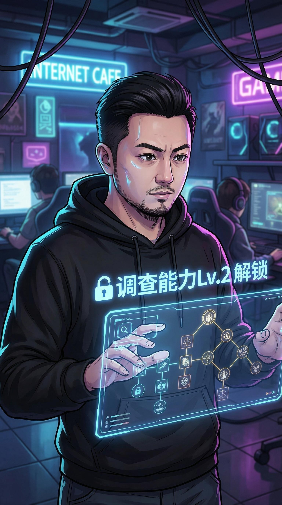
「校友关系。最不起眼，也最牢固的人脉。」
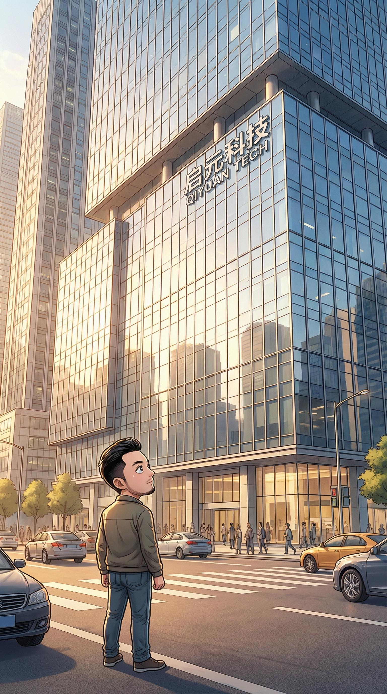
启元科技大楼。气派的科技园，反射玻璃幕墙。
我站在对面马路，打量着这个即将摧毁我公司的庞然大物。
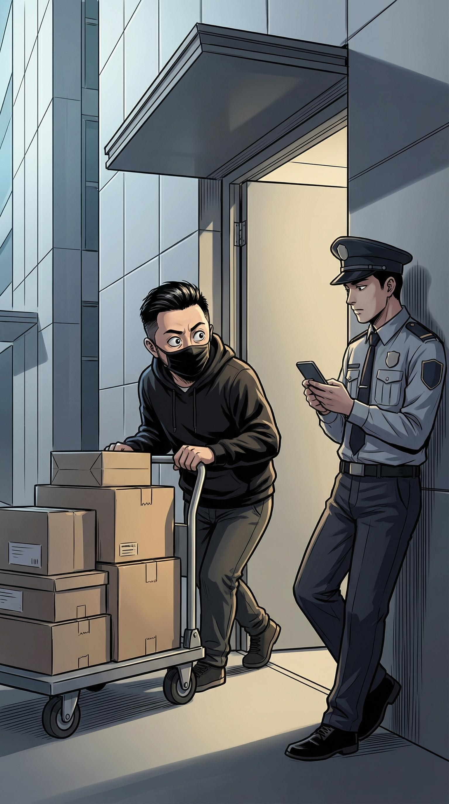
戴上口罩，拉低帽檐。混进送餐车队，跟着外卖员溜进了大楼。
进入大楼后怎么办？
A. 直接去前台问赵琳
B. 混进茶水间偷听
C. 找到服务器机房
→ 选B：最好的情报来自无意的对话。
💡 混进去后发现启元的零食区比我公司好一万倍——"难怪他们能免费开放API，员工零食预算就够我们公司三个月工资。"
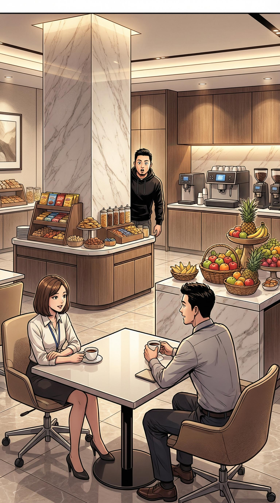
茶水间。两个启元员工在闲聊。
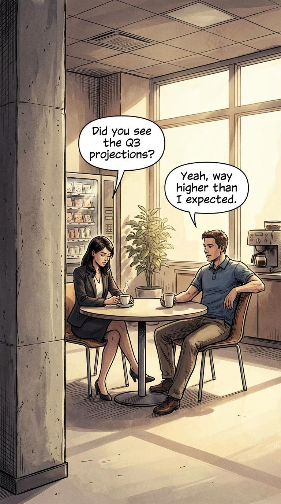
员工A："天枢发布会才过了几小时，商务部已经在对接四家了，效率真快。"
员工B："赵琳那边提前三周就开始铺了，白皮书都给出去了。"
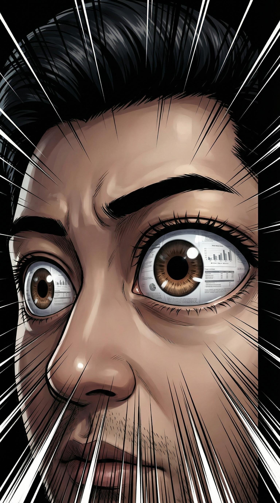
「提前三周。白皮书提前三周就外发了。林薇桌上那份...是赵琳给她的。」
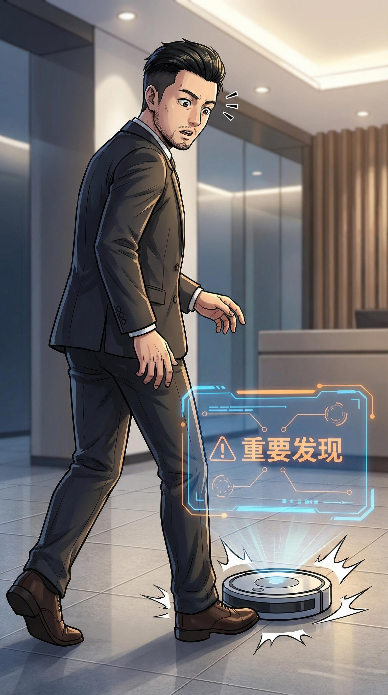
💡 正要走，差点被启元的扫地机器人绊倒——"连扫地机器人都在针对创业公司。"
回公司途中，手机震动。
未知号码。
接听。对方的声音经过处理，像金属摩擦：
"朱江先生，你已经是第三次循环了。"
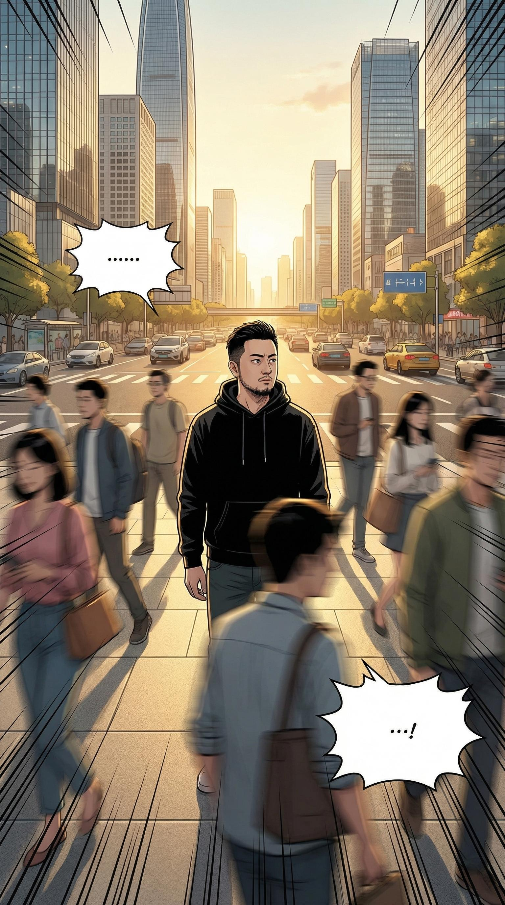
我停在路中间。路人绕过我。全城车水马龙，我像被冻住了。
「有人知道。有人在看着我循环。」
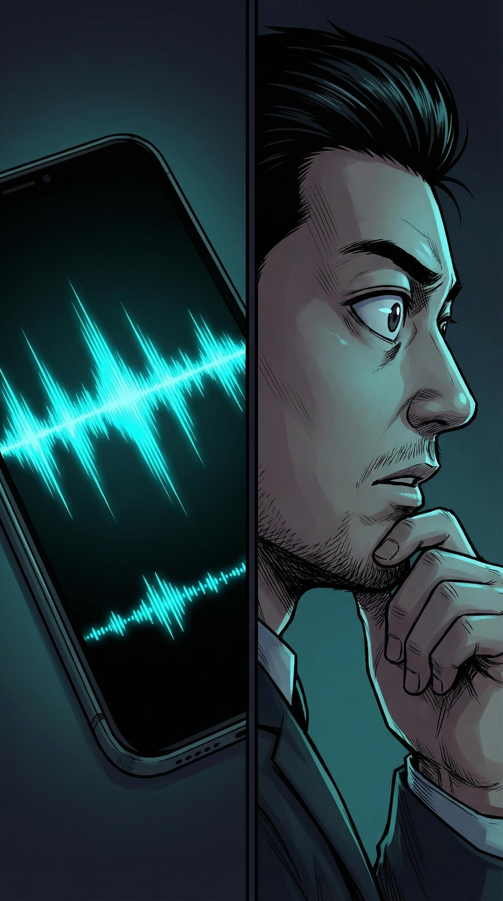
声音继续："不用慌。我不是敌人。但循环不是免费的。每一次循环，你的公司都在另一条时间线里死掉。"
"你有一个选择——继续循环调查真相，还是停止循环，带着现有信息回到现实？"
"我选继续。但我有一个条件——告诉我循环的规则是谁设定的。"
声音："...下次循环再聊。"——挂断。
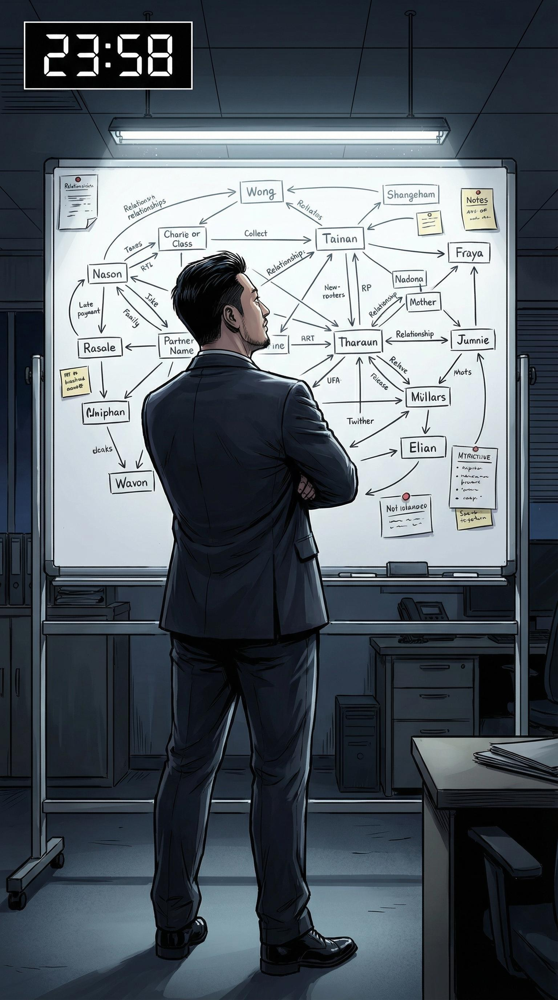
回到办公室。这次不路演。我在白板上画了一张大图——所有发现的关系网。
「笔记不保留。但我的脑子保留。」
💡 看了眼白板——"下次创业开思维导图公司，刚需。"
「第四次。这次我有三件事要做：一、确认林薇的立场。二、让路演成功。三、找到那个打电话的人。」

这次正常上班。但策略完全不同。
进公司后直接找林薇："林薇，我昨晚想了一夜，如果启元开放API，我们有没有可能反过来用他们的API做差异化？"

林薇的表情微妙变化——先惊讶，然后快速恢复职业微笑："这个思路有意思。我之前...研究过一些启元的资料。"
「"之前研究过"。她没说谎。她只是...没说全部。」
不揭穿，继续观察。菩萨心肠——在证据不足时不冤枉人。霹雳手段——暗中继续收集。

路演。但这次我穿了黑色高领毛衣——不是西装。
刻意表达："我不是来求钱的，我是来做生意的。"

不讲PPT。直接在白板上现场画架构图。
"王总，我给你看的不是未来，是今天就能跑的东西。"
手速极快。三个投资人的表情从无聊→好奇→认真。

掏出手机，现场演示：
"这是我们凌晨四点上线的demo。用了启元的免费API加我们自己的中间层。你觉得启元免费API杀死了我们？不，他们刚帮我们省了三个月的底层开发。"
💡 现场demo差点崩溃——"加载中...这不是bug，这是...戏剧性。" 投资人居然笑了。
把危机变成机会。典型的创业者思维——把系统的bug变成feature。

路演结束。走廊。
但这次不一样——王总追了出来。

王总："朱江。你的demo很有意思。但我更想知道...你怎么这么快就做出了pivot？"
我微笑："因为我昨晚想了一整夜。"
💡 心里OS：准确地说，我想了三个昨晚。但这话我不能说，说了他会叫120。

王总："我们再聊聊。明天——不，今晚。八点，福田那家潮汕牛肉火锅。"
「第一次。四个循环以来，第一次有人说'今晚继续聊'。这条时间线...有门。」

潮汕牛肉火锅店。热气腾腾。我和王总面对面。
脱掉高领毛衣，里面白T恤——非正式化，放松。

吃着火锅聊创业。
王总："你这个年纪...最怕的是什么？"
我夹起一片胸口朥："最怕...循环。"
"什么循环？"
"...创业的循环。融资、烧钱、再融资。我想跳出去。"
「我说的是两种循环。但王总只听到了一种。」

王总放下筷子：
"朱江，你知道为什么我今天追出来吗？不是因为你的demo。是因为你把PPT关掉、在白板上画架构的时候——我看到了真正的创业者。不是表演者。"
这时林薇打电话来。我看了眼手机，按了静音。当下这个moment不能被打断。

回公司路上，23:00。查看林薇的未接电话留言。
林薇的声音："朱江，我有一件事...应该早告诉你的。赵琳是我同学。启元的事，我提前知道。我想...我想帮公司做准备，但我不知道怎么开口。"

「不是背叛。是...笨拙的善意。」
💡 好消息：我最信任的合伙人没有背叛我。坏消息：她的沟通能力需要严重升级。创业公司的管理难题+1。

23:55。出租车后座。
手机震动——又是那个未知号码。
短信："你做得不错。Loop#4是你最好的一次。但你还没有问最重要的问题：为什么是你？"
「为什么是我？」
「这个问题...比公司存亡更让我害怕。」